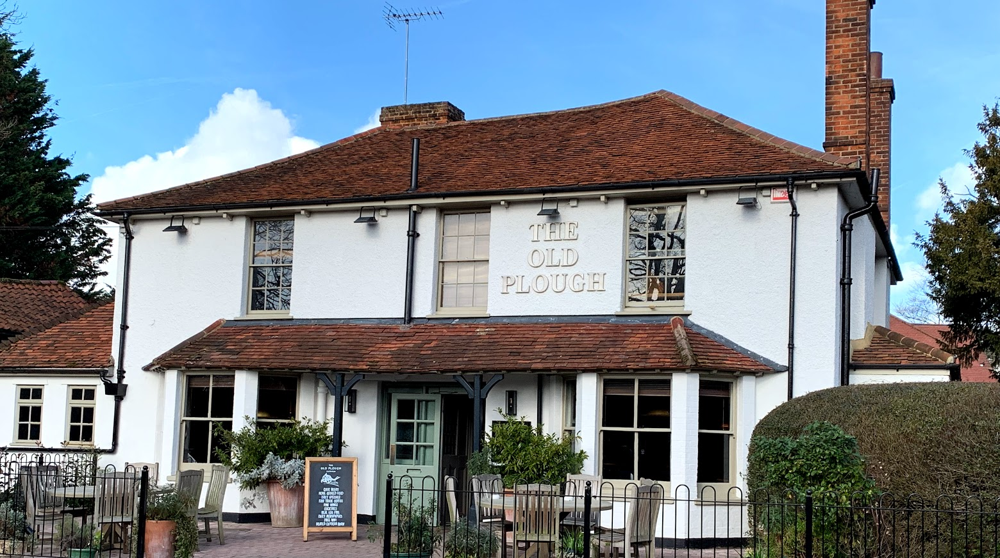

Welcome to the home page of Cobham Trail which has been devised by Cobham Trefoil Guild to celebrate
the centenary of Cobham Guides. However, we are inviting everyone to come and try it out.
The trail is a circular walk of approximately 3.5 miles, which starts and finishes at Cobham and
Stoke D'Abernon Railway Station. The walk will take you along either pavements or footpaths so there
is no danger of getting muddy feet! While walking the route, you are asked to answer clues which
need to be added to an answer grid in order that you can solve the final quiz.
|  |
The trail will take you through the villages of both Stoke D'Abernon and Cobham and you
will pass the pubs of The Old Plough, The Bear and The Running Mare as well as a variety
of coffee shops so there is ample opportunity for a well earned break.
|
We hope that you will learn a little about the history of the area as you walk through the
grounds of St Andrew's Church, down historic Church Street, follow the route of the River Mole,
past the famous Cobham Mill, through the conservation area of The Tilt and into Cobham Cemetery
where The Chapel was built in 1885.
|  |
| The trail is free to download from here and once completed, you can download a certificate. There is
also an option to purchase a badge for
£xxx.
Instructions for purchase |
|
|